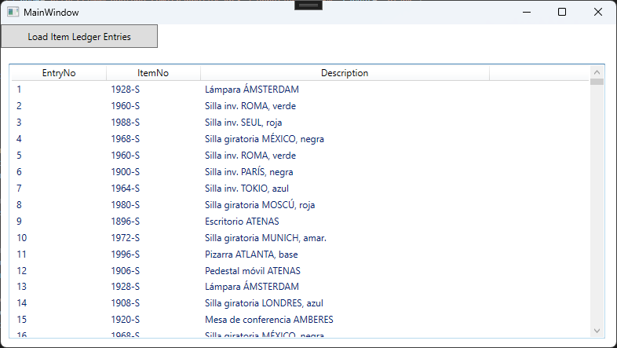
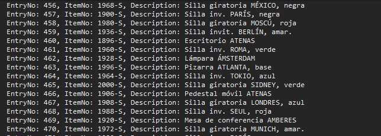

Manual de Integración con Business Central desde .NET
1. Obtener el Token de Acceso
Para acceder a los servicios web de Business Central, primero necesitas obtener un token de acceso de Azure Active Directory (AAD) / Microsoft Entra ID. A continuación se muestra cómo hacerlo:
1.1. Configuración de Variables
// URL parts
private const string TenantId = "your-tenant-id"; //ej: 4c2543db-5g31-4b8e-8dc6-123c73b8aefe"
private const string ApiVersion = "v2.0";
// Auth related constants
private static readonly string tokenUri = $"https://login.windows.net/{TenantId}/oauth2/{ApiVersion}/token";
private static readonly string clientId = "your-application-(client)-ID"; //9e09312c-a22s-1b11-a11v-2855c3ee6fa3
private static readonly string clientSecret = "your-Application-clientSecret"; //0aH9Q~XO14Wx9OwpHE3it5DXGNypsF.i7kt4ups8
private static readonly string scope = "https://api.businesscentral.dynamics.com/.default";
Para obtener estos valores, necesitas registrar una aplicación en Azure Active Directory y configurar los permisos necesarios para Business Central.
1.2. Obtener el Token de Acceso
El siguiente método muestra cómo obtener el token de acceso:
public static async Task<string> GetAccessToken()
{
try
{
using (var httpClient = new HttpClient())
{
var body = new FormUrlEncodedContent(new[]
{
new KeyValuePair<string, string>("grant_type", "client_credentials"),
new KeyValuePair<string, string>("client_id", clientId),
new KeyValuePair<string, string>("client_secret", clientSecret),
new KeyValuePair<string, string>("scope", scope)
});
var response = await httpClient.PostAsync(tokenUri, body);
response.EnsureSuccessStatusCode();
var responseBody = await response.Content.ReadAsStringAsync();
dynamic jsonResponse = JsonConvert.DeserializeObject(responseBody);
return jsonResponse.access_token;
}
}
catch (Exception ex)
{
MessageBox.Show("Error al obtener el token de acceso.", "Error", MessageBoxButton.OK, MessageBoxImage.Error);
throw;
}
}
2. Hacer una Petición a un Servicio Web de Business Central
Una vez que tienes el token de acceso, puedes hacer peticiones a los servicios web de Business Central. A continuación se muestra cómo obtener los registros de Movs Productos:
2.1. Obtener ItemLedgerEntries
public static async Task<List<ItemLedgerEntry>> ObtenerItemLedgerEntries()
{
string errorGet = "Error al obtener los registros de Movs Productos desde Business Central";
string errorNoData = "No se recibieron datos válidos desde la API.";
try
{
string accessToken = await GetAccessToken();
string url = $"{BaseUrl}/{ApiVersion}/{TenantId}/{Environment}{ItemLedgerEntriesEndpoint}";
using (var httpClient = new HttpClient())
{
httpClient.DefaultRequestHeaders.Authorization = new System.Net.Http.Headers.AuthenticationHeaderValue("Bearer", accessToken);
var response = await httpClient.GetAsync(url);
response.EnsureSuccessStatusCode();
var responseBody = await response.Content.ReadAsStringAsync();
var data = JsonConvert.DeserializeObject<BusinessCentralItemLedgerEntriesResponse>(responseBody);
if (data != null && data.value != null)
{
// Logging para verificar los datos recibidos
foreach (var entry in data.value)
{
System.Diagnostics.Debug.WriteLine($"EntryNo: {entry.EntryNo}, ItemNo: {entry.ItemNo}, Description: {entry.Description}");
}
return data.value;
}
else
{
// Manejo de caso cuando no hay datos válidos
System.Diagnostics.Debug.WriteLine(errorNoData);
return new List<ItemLedgerEntry>();
}
}
}
catch (Exception ex)
{
logger.Error(ex, errorGet);
MessageBox.Show(errorGet, "Error", MessageBoxButton.OK, MessageBoxImage.Error);
throw;
}
}
Los endpoints de Business Central siguen un patrón común. Para otros endpoints, solo necesitas cambiar la parte final de la URL.
string ItemLedgerEntriesEndpoint = "/ODataV4/Company('CRONUS%20España%20S.A.')/ItemLedgerEntries";
3. Mostrar Datos en una Ventana WPF
Una vez que tienes los datos, puedes mostrarlos en una ventana WPF. A continuación se muestra cómo hacerlo:
3.1. Definir la Ventana WPF
<Window x:Class="TestParaManual.MainWindow"
xmlns="http://schemas.microsoft.com/winfx/2006/xaml/presentation"
xmlns:x="http://schemas.microsoft.com/winfx/2006/xaml"
xmlns:d="http://schemas.microsoft.com/expression/blend/2008"
xmlns:mc="http://schemas.openxmlformats.org/markup-compatibility/2006"
xmlns:local="clr-namespace:TestParaManual"
mc:Ignorable="d"
Title="MainWindow" Height="450" Width="800">
<Grid>
<Button Content="Load Item Ledger Entries" HorizontalAlignment="Left" VerticalAlignment="Top" Width="200" Height="30" Click="OnLoadItemLedgerEntriesButtonClick"/>
<ListView Name="ItemLedgerEntriesListView" HorizontalAlignment="Left" Height="350" VerticalAlignment="Top" Width="760" Margin="10,50,0,0">
<ListView.View>
<GridView>
<GridViewColumn Header="EntryNo" DisplayMemberBinding="{Binding EntryNo}" Width="120"/>
<GridViewColumn Header="ItemNo" DisplayMemberBinding="{Binding ItemNo}" Width="120"/>
<GridViewColumn Header="Description" DisplayMemberBinding="{Binding Description}" Width="120"/>
<!-- Agrega más columnas según sea necesario -->
</GridView>
</ListView.View>
</ListView>
</Grid>
</Window>
3.2. Código Behind para la Ventana WPF
using System;
using System.Collections.Generic;
using System.Collections.ObjectModel;
using System.Linq;
using System.Threading.Tasks;
using System.Windows;
using System.Windows.Controls;
namespace TestParaManual
{
public partial class MainWindow : Window
{
private ObservableCollection<ItemLedgerEntry> ItemLedgerEntriesL;
public MainWindow()
{
InitializeComponent();
ItemLedgerEntriesL = new ObservableCollection<ItemLedgerEntry>();
ItemLedgerEntriesListView.ItemsSource = ItemLedgerEntriesL;
}
private async void OnLoadItemLedgerEntriesButtonClick(object sender, RoutedEventArgs e)
{
System.Diagnostics.Debug.WriteLine($"INICIO!");
await LoadItemLedgerEntries();
}
private async Task LoadItemLedgerEntries()
{
string errorCargar = "Error al cargar los registros de Movs Productos:";
try
{
var itemLedgerEntries = await BusinessCentralAPI.ObtenerItemLedgerEntries();
ItemLedgerEntriesL.Clear(); // Limpiar la lista antes de agregar nuevos elementos
foreach (var entry in itemLedgerEntries)
{
ItemLedgerEntriesL.Add(entry);
}
}
catch (Exception ex)
{
MessageBox.Show($"{errorCargar} {ex.Message}", "Error", MessageBoxButton.OK, MessageBoxImage.Error);
}
}
}
}
3.3. Ejemplo de la Ventana WPF
A continuación se muestran ejemplos visuales de la ventana WPF con los datos cargados:

